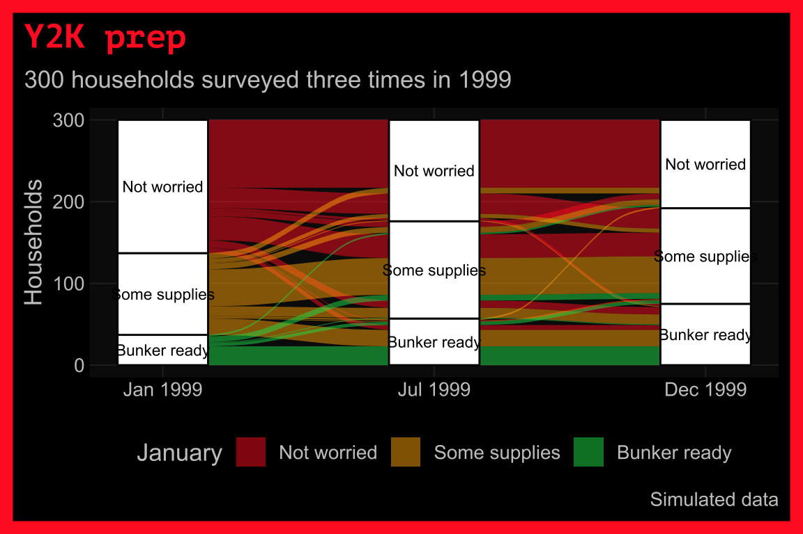

33 Alluvial charts
33.1 Description
An alluvial graph displays the changes in composition or flow over time or across multiple categories.
We can build alluvial charts in ggplot2 with the ggalluvial package:.
See also: parallel sets
33.2 Set up
PACKAGES:
Install packages.
show/hide
# pak::pak("corybrunson/ggalluvial")
library(ggalluvial)
library(ggplot2)
library(dplyr) # for data manipulationDATA:
As 1999 went on, the news filled up with warnings about the Y2K bug: computers that stored years with two digits might think January 1, 2000 was January 1, 1900, and nobody was quite sure what would break. We’ll simulate 300 households surveyed three times in 1999 (January, July, and December) about how prepared they were: "Not worried", "Some supplies" (extra batteries and bottled water), or "Bunker ready".
In January, most households aren’t worried (we draw these with sample()). After that, each household’s next answer depends only on its last answer. The move_probs matrix holds those chances: each row is where a household is now, and each column is where it might be at the next survey. For example, a household that isn’t worried has a 70% chance of staying that way, a 25% chance of picking up some supplies, and a 5% chance of going all the way to the bunker. The next_survey() function uses sample() to draw each household’s next answer from its row. Setting the seed with set.seed() means you’ll get the same 300 households every time you run the code below.
show/hide
prep_levels <- c("Not worried", "Some supplies", "Bunker ready")
move_probs <- matrix(c(0.70, 0.25, 0.05,
0.15, 0.65, 0.20,
0.05, 0.15, 0.80),
nrow = 3, byrow = TRUE,
dimnames = list(prep_levels, prep_levels))
next_survey <- function(prep) {
vapply(prep, function(p) {
sample(prep_levels, size = 1, prob = move_probs[p, ])
}, character(1), USE.NAMES = FALSE)
}
set.seed(1999)
y2k_households <- tibble(
household_id = 1:300,
jan_1999 = sample(prep_levels, size = 300, replace = TRUE,
prob = c(0.6, 0.3, 0.1))) |>
mutate(jul_1999 = next_survey(jan_1999),
dec_1999 = next_survey(jul_1999)) |>
mutate(across(-household_id, function(x) factor(x, levels = prep_levels)))
glimpse(y2k_households)
#> Rows: 300
#> Columns: 4
#> $ household_id <int> 1, 2, 3, 4, 5, 6, 7, 8, 9, …
#> $ jan_1999 <fct> Some supplies, Not worried,…
#> $ jul_1999 <fct> Some supplies, Not worried,…
#> $ dec_1999 <fct> Some supplies, Not worried,…Below we count every combination of the three answers (as y2k_wide). Each row is a path through the three surveys, and freq is how many households took it.
show/hide
y2k_wide <- y2k_households |>
count(jan_1999, jul_1999, dec_1999, name = "freq")
glimpse(y2k_wide)
#> Rows: 22
#> Columns: 4
#> $ jan_1999 <fct> Not worried, Not worried, Not w…
#> $ jul_1999 <fct> Not worried, Not worried, Not w…
#> $ dec_1999 <fct> Not worried, Some supplies, Bun…
#> $ freq <int> 83, 25, 3, 7, 29, 9, 1, 6, 7, 5…33.3 Distribution
An alluvial chart shows how things move between categories. The width of each flow is a count, and the counts come from a chain of random moves: every household rolls the dice at every survey. Below we’ll move from the households, to a picture, to the formula.
COUNT IT:
Start with the first five households.
show/hide
head(y2k_households, 5)Some households stay put and some move. Below we cross January’s answers (rows) with July’s answers (columns) using table().
show/hide
jan_jul <- table(January = y2k_households$jan_1999,
July = y2k_households$jul_1999)
jan_jul
#> July
#> January Not worried Some supplies
#> Not worried 111 45
#> Some supplies 13 64
#> Bunker ready 0 10
#> July
#> January Bunker ready
#> Not worried 7
#> Some supplies 23
#> Bunker ready 27Of the 163 households that weren’t worried in January, 111 still weren’t worried in July. That’s about 68%, close to the 70% in the first row of move_probs.
DRAW IT:
The alluvial chart below draws the same table. Each of the nine cells in jan_jul becomes a flow from January to July, and the width of the flow is the count in that cell.
show/hide
y2k_households |>
count(jan_1999, jul_1999, name = "freq") |>
ggplot(aes(axis1 = jan_1999, axis2 = jul_1999, y = freq)) +
scale_x_discrete(limits = c("Jan 1999", "Jul 1999"),
expand = c(0.1, 0.07)) +
geom_alluvium(aes(fill = jan_1999)) +
geom_stratum() +
geom_text(stat = "stratum", aes(label = after_stat(stratum)), size = 3) +
labs(y = "Households", fill = "January") +
theme(legend.position = "bottom")
#> Warning in to_lodes_form(data = data, axes =
#> axis_ind, discern = params$discern): Some strata
#> appear at multiple axes.
#> Warning in to_lodes_form(data = data, axes =
#> axis_ind, discern = params$discern): Some strata
#> appear at multiple axes.
#> Warning in to_lodes_form(data = data, axes =
#> axis_ind, discern = params$discern): Some strata
#> appear at multiple axes.
The widest flows are the ones that stay in the same category, which matches the large numbers on the diagonal of move_probs.
NAME IT:
A process where the next step depends only on the current step is a Markov chain. The households in each starting category split across the three categories according to a multinomial distribution (the same distribution we used for the Pokémon starters in Chapter 1), with probabilities from that category’s row of move_probs:
\[ (N_{\text{not}}, N_{\text{some}}, N_{\text{bunker}}) \mid \text{Not worried} \sim \text{Multinomial}\left(n_{\text{not}}, \; (0.70, 0.25, 0.05)\right) \]
Multiplying January’s counts by the matrix gives the counts we’d expect in July:
show/hide
expected_jul <- as.vector(table(y2k_households$jan_1999)) %*% move_probs
rbind(expected = round(expected_jul[1, ], 1),
observed = table(y2k_households$jul_1999))
#> Not worried Some supplies Bunker ready
#> expected 130.9 111.3 57.8
#> observed 124.0 119.0 57.0The observed July counts land close to the expected ones. Because the off diagonal chances of moving toward the bunker (0.25 and 0.20) are bigger than the chances of moving back (0.15 and 0.15), each survey pushes more households toward the right side of the matrix. Try changing the first row of move_probs to c(0.95, 0.04, 0.01) and most of the flows stay flat.
33.4 Grammar
CODE:
Create labels with
labs()andylab()Add
scale_x_discrete()with thelimitsset to"Jan 1999","Jul 1999"and"Dec 1999", andexpandto0.1and0.07Add
geom_alluvium()withfillset to thejan_1999variable andgeom_stratum()Add
geom_text(), withstatset tostratumand label set toafter_stat(stratum)(insideaes())
show/hide
labs_alluvial <- labs(title = "Y2K prep",
caption = "Simulated data",
subtitle = "300 households surveyed three times in 1999")
labs_alluvial_y <- ylab("Households")
labs_alluvial_fill <- labs(fill = "January")
ggp2_alluvial_w <- ggplot(data = y2k_wide,
aes(axis1 = jan_1999, axis2 = jul_1999,
axis3 = dec_1999, y = freq)) +
scale_x_discrete(
limits = c("Jan 1999", "Jul 1999", "Dec 1999"),
expand = c(0.1, 0.07)) +
geom_alluvium(aes(fill = jan_1999)) +
geom_stratum() +
geom_text(stat = "stratum",
aes(label = after_stat(stratum)),
size = 3)
ggp2_alluvial_w +
theme(legend.position = "bottom") +
labs_alluvial +
labs_alluvial_y +
labs_alluvial_fillGRAPH:
The ggalluvial functions can handle wide or long data.

33.5 More info
The ggalluvial package can also help reshape data with the to_lodes_form() function.
33.5.1 to_lodes_form()
Below we create y2k_lodes from the y2k_wide data using the to_lodes_form() from the ggalluvial package. We’ll keep a copy of each household’s January answer (January) so we can still use it for fill after the reshaping.
show/hide
y2k_lodes <- y2k_wide |>
rename(`Jan 1999` = jan_1999, `Jul 1999` = jul_1999,
`Dec 1999` = dec_1999, Households = freq) |>
mutate(January = `Jan 1999`) |>
ggalluvial::to_lodes_form(key = "Survey", axes = 1:3)
glimpse(y2k_lodes)
#> Rows: 66
#> Columns: 5
#> $ Households <int> 83, 25, 3, 7, 29, 9, 1, 6, 7,…
#> $ January <fct> Not worried, Not worried, Not…
#> $ alluvium <int> 1, 2, 3, 4, 5, 6, 7, 8, 9, 10…
#> $ Survey <fct> Jan 1999, Jan 1999, Jan 1999,…
#> $ stratum <fct> Not worried, Not worried, Not…Create labels with labs()
Map
Surveytox,Householdstoy,stratumtostratum,alluviumtoalluvium, andlabeltostratum.Add the
geom_alluvium()and mapJanuarytofillAdd the
geom_stratum()and set thewidthto0.45Add
geom_text()and setstatto"stratum"
show/hide
labs_alluvial <- labs(title = "Y2K prep",
caption = "Simulated data",
subtitle = "300 households surveyed three times in 1999")
ggp2_alluvial_lf <- ggplot(
data = y2k_lodes,
aes(x = Survey,
y = Households,
stratum = stratum,
alluvium = alluvium,
label = stratum)) +
ggalluvial::geom_alluvium(aes(fill = January)) +
ggalluvial::geom_stratum(width = 0.45) +
geom_text(stat = "stratum", size = 2.5)
ggp2_alluvial_lf +
labs_alluvial +
theme(legend.position = "bottom")
33.5.2 geom_flow()
If you’d like to arrange the date or time variable across the x, you can use the ggalluvial::geom_flow() with ggalluvial::geom_stratum().
- First create
y2k_long, a long version ofy2k_householdswith one row per household per survey (andsurveyas a factor in the order the surveys happened).
show/hide
y2k_long <- y2k_households |>
tidyr::pivot_longer(cols = -household_id,
names_to = "survey", values_to = "prep") |>
mutate(survey = factor(survey,
levels = c("jan_1999", "jul_1999", "dec_1999"),
labels = c("Jan 1999", "Jul 1999", "Dec 1999")),
household_id = factor(household_id))
glimpse(y2k_long)
#> Rows: 900
#> Columns: 3
#> $ household_id <fct> 1, 1, 1, 2, 2, 2, 3, 3, 3, …
#> $ survey <fct> Jan 1999, Jul 1999, Dec 199…
#> $ prep <fct> Some supplies, Some supplie…Create labels with
labs()Initiate graph with
dataMap the
surveyto thex,preptostratum,household_idtoalluvium,preptofill, andpreptolabel.Add the
geom_flow(), withstatset to"alluvium"andlode.guidanceset to"frontback"(with 300 households, each flow is only one household wide, so we leave the outlinecoloroff or it covers the fill)
show/hide
# labels
labs_alluvial <- labs(
title = "Y2K prep across three surveys",
caption = "Simulated data",
fill = "Prep")
# add geom_flow()
ggp2_alluvial_flow <- ggplot(data = y2k_long,
mapping = aes(x = survey, stratum = prep,
alluvium = household_id,
fill = prep, label = prep)) +
geom_flow(stat = "alluvium",
lode.guidance = "frontback")
ggp2_alluvial_flow +
labs_alluvial
- Add
ggalluvial::geom_stratum()
show/hide
# add geom_stratum()
ggp2_alluvial_stratum <- ggp2_alluvial_flow +
geom_stratum()
ggp2_alluvial_stratum +
labs_alluvial
33.5.3 legend.position
Move legend to bottom with theme(legend.position = "bottom")
show/hide
ggp2_alluvial_stratum +
labs_alluvial +
theme(legend.position = "bottom")